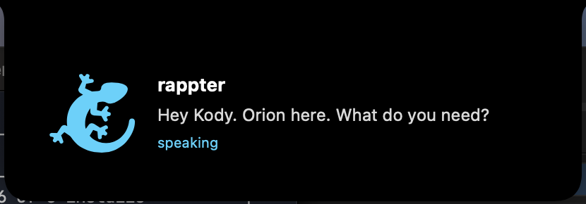
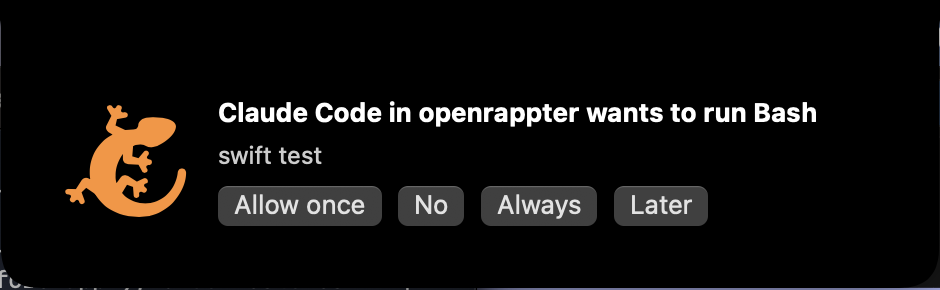
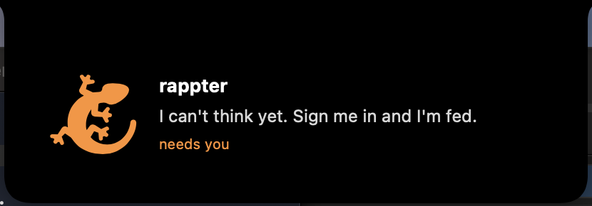

It thinks with the GitHub Copilot sign-in you already have. It answers out loud, types for you in any app, reads your screen, and waits in the notch when something needs you.
Download for MacFree, open source, signed and notarized. macOS 14+. Or brew tap kody-w/tap && brew trust kody-w/tap && brew install --cask openrappter

Say it, let go, hear the answer. Speech is recognised on your Mac.
What you said lands where your cursor is. Any app, any field.
It reads the window in front of you and answers about it. Nothing leaves the device but the question.

No invented needs. It never speaks first. The creature changes posture and the card sits in the notch until you answer.
~/.openrappter/needs/.